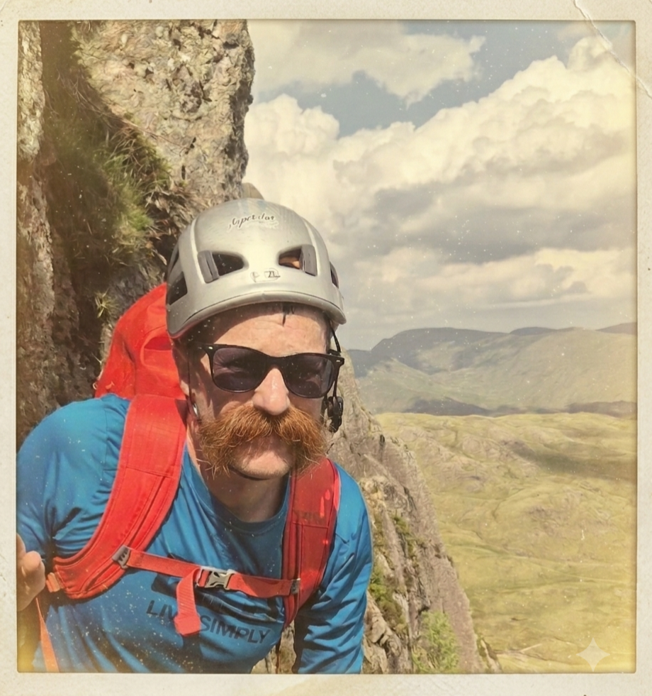

This month's distinguished member
Recognised for exceptional leadership, courage, character and keeping the helmet at the regulation wonky angle.
Chosen for admirable persistence, a fine commitment to securing a place in the Rucksack Club Calendar, and consistently sound judgement on steep ground. The Committee also wishes to recognise the excellent sending of L'Angle Allain (Gauche), a climb reputed to be so demanding that 'even Adam Ondra fell off'.
Whilst the Committee has been unable to verify this claim, it has unanimously agreed that it should not be allowed to spoil a perfectly good story.